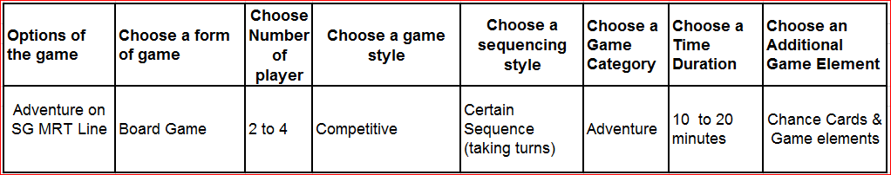

|
|---|
Score Scheme:
1 - Much worse than reference point
2 - Worse than the reference point
3 - Equivalent to reference point
4 - Better than reference point
5 - Much better than reference point
From the Pugh chart matrix, Option 3, Advanture on the MRT Line, will be the best option.

It has a broad variaty of playing option and enables a higher level of interactions between the players.
At the same time, it also ensures a certain level of randomness and Beginner-friendliness.